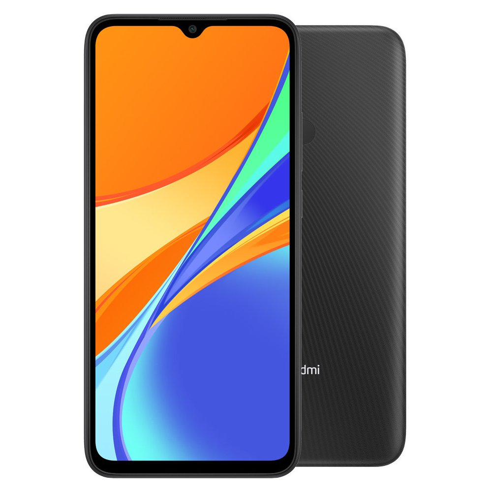
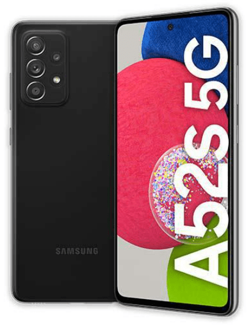
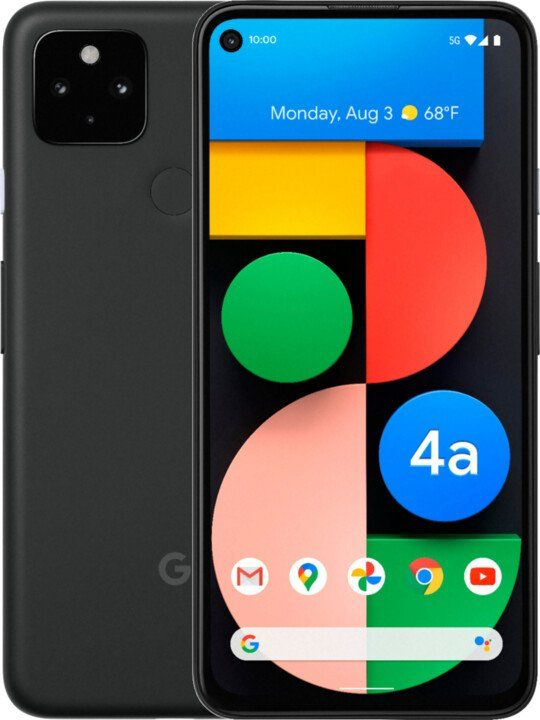

Hlavným lákadlom, na ktorý sa spoločnosť Apple najviac zamerala, je dlho očakávaná fotosústava so širokouhlým a ultraširokouhlým záberom, ktorá vám dovolí zachytiť scénu v celej svojej kráse a navyše poskytne až dvojnásobný optický zoom. Okrem toho ponúkne úchvatný nočný režim, s ktorým môžete fotiť aj v hlbokej tme. Pozadu nezostalo ani video s rozlíšením 4K pri 60 snímkach za sekundu či spomalený režim s až 240 snímkami vo Full HD.
Kľúčové vlastnosti:
Uhlopriečka displeja 6,1" (15,49 cm)
Rozlíšenie displeja 1792 × 828
Operačná pamäť 4 GB
Rozlíšenie kamery 12 Mpx
Jemnosť displeja 326 PPI
Kapacita batérie 3 110 mAh
Frekvencia procesora 2,65 GHz (2 650 MHz)
Typ objektívu Širokouhlý, Teleobjektív
Optická stabilizácia obrazu
Typ displeja IPS
3000€
Xiaomi Redmi 9C 64GB

Popis
Chytrý telefón Redmi 9C od značky Xiaomi vás odprevadí na každom kroku. Je vybavený vysokokapacitnou batériou s 5 000 mAh, duálnym fotoaparátom s umelou inteligenciou i nadupaným výkonom. Nechýba mu kvalitný displej s HD+ rozlíšením, dotykové odomykanie ani herná technológia pre realistické zážitky z hrania hier. Jeho dizajn je nielen ľúbezný a elegantný, ale vďaka špeciálnej povrchovej úprave na ňom navyše nezostávajú odtlačky prstov.
Kľúčové vlastnosti:
Uhlopriečka displeja 6,53" (16,59 cm)
Rozlíšenie displeja 1600 × 720
Operačná pamäť 3 GB
Rozlíšenie fotoaparátu 13 Mpx
Jemnosť displeja 269 PPI
Kapacita batérie 5 000 mAh
Frekvencia procesora 2,3 GHz (2 300 MHz)
Typ objektívu Makro
Typ displeja IPS
Typ pamäťovej karty MicroSD
1500€
Samsung Galaxy A52s 5G

Popis
Spoločnosť Samsung patrí na poli inteligentných mobilných telefónov medzi svetové špičky a svoje postavenie dokazuje aj v prípade Galaxy A52s 5G. Telefónu na prednej strane dominuje veľký 6,5" Super AMOLED displej s extra tenkými rámikmi, ktoré dávajú zariadeniu luxusný vzhľad, ktorý dopĺňa aj vstavaná kruhová selfie kamera v prednej časti obrazovky.
Kľúčové vlastnosti:
Uhlopriečka displeja 6,5" (16,51 cm)
Rozlíšenie displeja 2400 × 1080
Operačná pamäť 6 GB
Rozlíšenie kamery 64 Mpx
Jemnosť displeja 407 PPI
Kapacita batérie 4 500 mAh
Frekvencia procesora 2,4 GHz (2 400 MHz)
Typ objektívu Širokouhlý, Makro
Typ displeja AMOLED
Typ pamäťovej karty MicroSD
900€
Google Pixel 4a

Popis
Pixel 4a asi nie je potrebné predstavovať. Pixely sa zameriavajú hlavne na kvalitu fotoaparátov a Google je známy svojim magickým softvérovým spracovaním fotiek. Okrem fotoaparátu tento model zaujme aj svojou veľkosťou, ako jeden z mála má uhlopriečku displeja menšiu ako 6 palcov.
Najlepší hardvér na trhu nečakajte, tým softvérová spoločnosť Google známa nie je. No prítomnosť niektorých “zastaralých” technológií stále poteší, ako napríklad 3,5 mm jack, rýchly a spoľahlivý snímač odtlačkov prstov na zadnej strane zariadenia alebo plastová konštrukcia menej náchylná na rozbitie.